{kind=link}
{kind=link}
{kind=link}
- - A clear weekly seasonal cycle
- - A mild but noticeable trend component
- - Irregular fluctuations consistent with market volatility

Forecasting Japan Electricity Prices Using ARIMA Models
Trinh Linh Dan
This project works with the ARIMA model and its variation to predict next – day electricity prices, with the empirical study from Japan energy exchange to help enterprises get better business decisions.
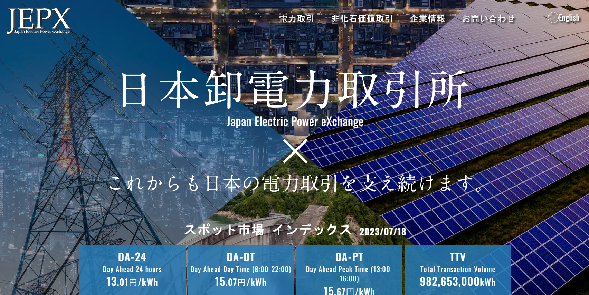Data description

The analysis of historical pricing revealed that the electricity price in the Japanese electricity market has not risen considerably. The only increase was linked to rising fuel prices and rising expectations for higher future CO2 pricing. A particular peak period was observed in winter 2020/2021 due to the unusual cold spell, the reactivation of industry following the global pandemic in 2020 and fear of increasing inflation affected worldwide. The average power price decreased by 3% from 2022 and 2023 following the plan to achieve sustainable energy by 2050.
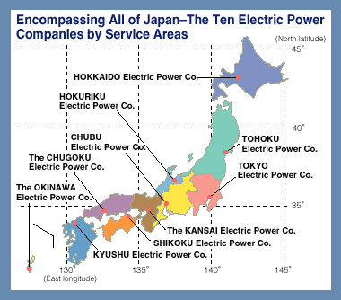Japan offers a particularly compelling case for electricity price forecasting due to its unique market structure and geographical diversity. Since the full liberalisation of the Japanese electricity market in 2016, price formation has become increasingly sensitive to regional demand patterns, renewable energy penetration, and seasonal weather conditions. These characteristics make Japan an ideal environment for testing the robustness of time‑series forecasting models.
To capture these dynamics, the study selects four datasets from the Japan Electric Power Exchange (JEPX), representing two distinct regions — Hokkaido and Kyushu, and two contrasting seasons — Spring 2023 and Summer 2022. Each dataset contains 85 consecutive daily observations of system prices.

|
| 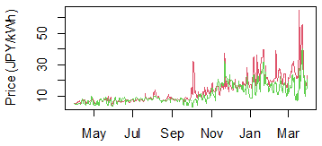 |
| 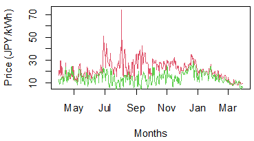 |
The choice of regions is deliberate. Hokkaido, with its colder climate and heavier winter heating demand, often experiences more volatile price movements. Kyushu, by contrast, has a higher share of solar generation, making its prices more sensitive to weather‑driven renewable fluctuations. The seasonal contrast further enriches the analysis: spring typically exhibits moderate demand, while summer—especially in Japan—brings intense heatwaves that drive electricity consumption sharply upward. These differences allow the study to evaluate how ARIMA‑type models perform under varying levels of volatility and seasonality.
Data cleaning
Checking for completeness
Since ARIMA models require evenly spaced observations, any gaps would necessitate imputation or removal. Fortunately, all four datasets were complete, allowing the analysis to proceed without modification
Identifying and assessing outliers
Electricity prices are known for sudden spikes caused by unexpected demand surges, generator outages, or renewable intermittency. Visual inspection through time‑series plots and histograms reveals several such spikes, particularly in the summer datasets. Rather than removing these values, the author retains them, recognising that they reflect genuine market behaviour. Removing them would artificially smooth the series and undermine the realism of the forecasting model
Testing for stationarity
Stationarity is a prerequisite for ARIMA modelling.
Three standard unit‑root tests:
- Augmented Dickey–Fuller (ADF)
- KPSS test
| Hokkaido Spring 2023 | Kyushu Spring 2023 | Hokkaido Summer 2022 | Kyushu Summer 2022 | |
|---|---|---|---|---|
| Dickey – Fuller test | -3.996/ P – value = 0.013 | -3.788/ P – value = 0.02 | -17.17/ P – value = 0.001 | -13.04/ P – value = 0.01 |
| KPSS test | 0.27/ P – value = 0.01 | 0.947/ P – value = 0.01 | 1.36/ P – value = 0.01 | 0.81/ P – value = 0.01 |
| Conclusion | Non‑stationary | Non‑stationary | Non‑stationary | Non‑stationary |
Across all datasets, the tests consistently indicate non‑stationarity, confirming the presence of trends, seasonality, or both.
Applying transformations
The purpose is to stabilise variance and remove non‑stationary components
The sequence of transformations:
- Seasonal differencing (lag 7) to remove weekly patterns inherent in electricity demand
- First differencing to eliminate residual trends
| 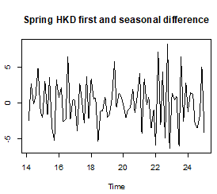 | 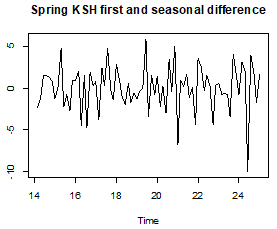 |
| 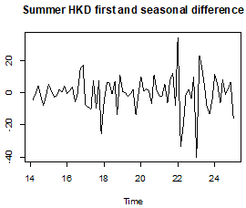 | 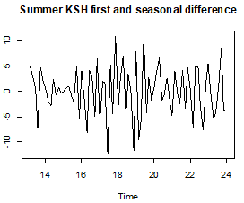 |
Data Exploration
Time ‑ series visualisation
 |
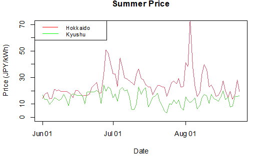 |
Spring prices in both regions show moderate fluctuations, while summer prices—especially in Hokkaido—display pronounced spikes. These spikes correspond to periods of extreme heat, when air‑conditioning demand surges and renewable output becomes less predictable.
Distributional characteristics
| 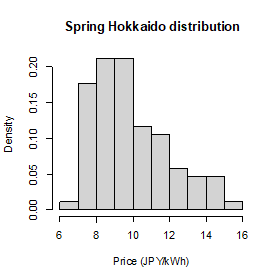 | 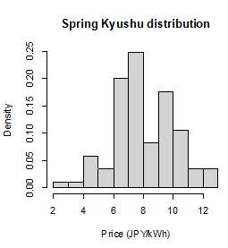 |
| 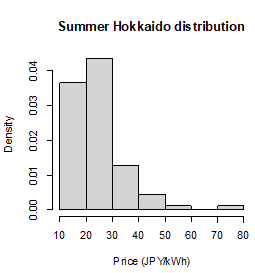 |  |
Histograms of the datasets show strong right‑skewness, confirming that electricity prices are not normally distributed. The summer datasets exhibit heavier tails, indicating a higher frequency of extreme price events. This reinforces the need for log transformation and careful model selection.
Seasonal decomposition
Decomposition of the series into trend, seasonal, and residual components confirms
Autocorrelation patterns
Autocorrelation (ACF) and partial autocorrelation (PACF) plots reveal:
- - A strong weekly seasonal pattern at lag 7
- - Secondary peaks at lag 14, suggesting bi‑weekly effects
- - Slow decay in autocorrelation, consistent with non‑stationarity
After differencing, the ACF and PACF plots become more stable, showing short‑range dependencies suitable for ARIMA modelling.
| 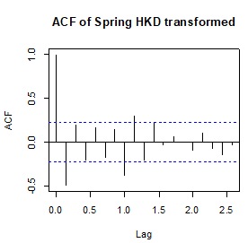 | |
| 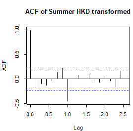 | 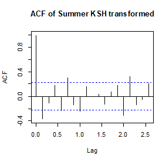 |
Data analysis
Implications from the data
The exploratory findings suggest several important characteristics
- - Electricity prices in Japan are highly seasonal, driven by weekly consumption patterns
- - Regional differences significantly influence volatility.
- - Summer datasets require models capable of handling extreme fluctuations.
Model identification
Using ACF and PACF patterns, ARIMA structures seem appropriate. Seasonal differencing at lag 7 is incorporated into all models. Automated model selection (auto.arima) was tested, but ultimately was rejected because it produces models with higher AIC values, and residuals from auto.arima models show remaining structure, indicating underfitting.
Final model selection
After testing various ARIMA configurations, the following models were selected based on AIC and residual diagnostics:
- - Hokkaido Spring: ARIMA(1,1,18)(0,1,1)7
- - Kyushu Spring: ARIMA(1,1,10)(0,1,3)7
- - Hokkaido Summer: ARIMA(1,1,8)(3,1,2)7
- - Kyushu Summer:- ARIMA(2,1,8)(0,1,3){}_77
Residual diagnostics
| 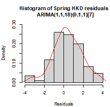 | 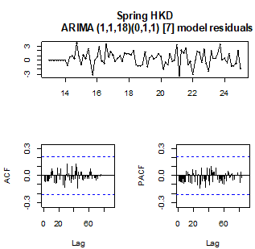 |
| 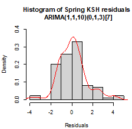 | 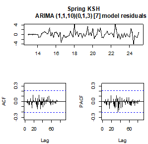 |
| 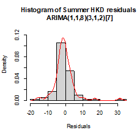 | 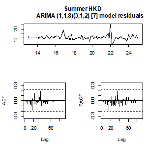 |
 |
 |
| Hokkaido Spring 2023 | Kyushu Spring 2023 | Hokkaido Summer 2022 | Kyushu Summer 2022 | |
|---|---|---|---|---|
| Box test's test level | 19.92 | 24.07 | 27.59 | 23.88 |
| p - value | 0.28 | 0.40 | 0.23 | 0.47 |
Residual analysis confirms:
- - No significant autocorrelation (Ljung – Box p ‑ values > 0.2)
- - Variance stability after transformation
- - Non‑normality of residuals, which is typical for electricity prices
Overall, the models capture the key dynamics of the series, though the non‑normality of residuals suggests that prediction intervals may be less reliable during extreme events.
Data Prediction
Forecast performance
The final step involves generating 7‑day ahead forecasts for each dataset using the selected models. The forecasts include both point estimates and 80% and 95% prediction intervals.
 |
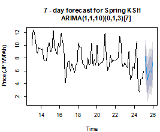 |
| 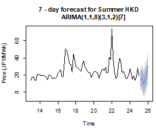 | 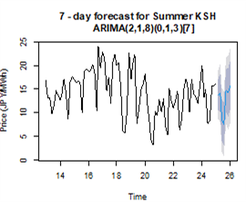 |
Forecasts fall comfortably within prediction intervals. Accuracy metrics indicate strong performance
- - MAPE: approximately 11–14%
- - RMSE: around 1.3–1.5
- - MSE: between 0.46 and 0.68
Given the inherent volatility of electricity markets, these results are considered robust.
Conclusion
The forecasts reflect the underlying seasonal patterns identified earlier. Spring predictions show relatively smooth trajectories, while summer predictions exhibit wider confidence intervals due to higher volatility. The models successfully capture weekly cycles and short ‑ term fluctuations, demonstrating the effectiveness of ARIMA ‑ based approaches for day ‑ ahead electricity price forecasting
Overall, the ARIMA ‑ based models demonstrated satisfactory performance and successfully captured the main seasonal and temporal dynamics of the Japanese electricity market. However, the persistence of non ‑ normal residual behaviour and occasional price spikes suggests that more advanced approaches, such as ANN, hybrid models, or machine ‑ learning ‑ based architectures, may be required to achieve higher predictive accuracy in future research.
_____________________________________________________________________________________________________